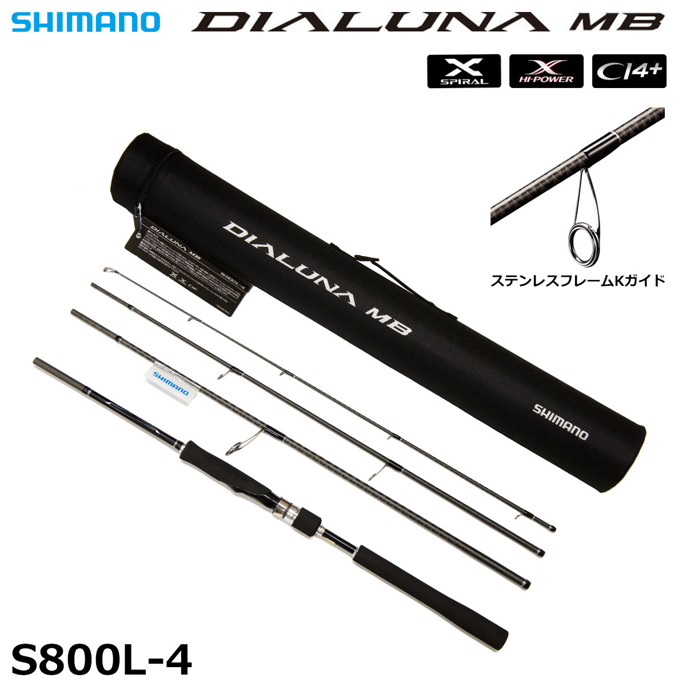
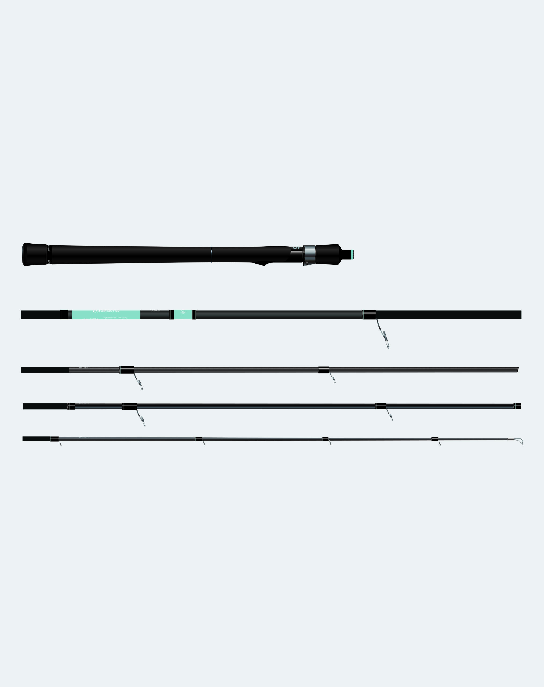

ディアルーナ MB
（DIALUNA MB）
ディアルーナ MBは、シマノのシーバスロッドの定番「ディアルーナ」の、4ピースのモバイル（MB）モデルです。
「いつでも、どこでも、気軽にルアーフィッシングを楽しみたい」アングラーに向けた高性能ソルトパックロッドで、スパイラルXとハイパワーXのダブルX構造で、パックロッドでもブレの少ないシャープな操作感が特徴です。

画像出典:キャスターハウス
スペック
- メーカー
- SHIMANO（シマノ）
- タイプ
- スピニングロッド（シーバス・モバイル）
- ラインナップ
- S706L-4／S800L-4／S806ML-4／S900ML-4
- 継数
- 4ピース（逆並継）
- 仕舞寸法
- 61.6〜72.8cm
- ブランク
- スパイラルX＋ハイパワーX
- リールシート
- CI4+（カーボン強化素材）
- ガイド
- ステンレスフレームKガイド（SiCリング）
- 付属品
- セミハードケース
- 価格
- S800L-4：34,300円（税別）
- 発売
- 2017年
▼今すぐチェック
ディアルーナ MBの特徴
定番シーバスロッド「ディアルーナ」を、4ピースのモバイルモデルに
-
ダブルX構造のブランク
シマノ独自の「スパイラルX」と「ハイパワーX」を組み合わせたブランク。キャスト時のブレが少なく、シャープなフィーリングとキレのある操作性を持つ。
-
軽いCI4+のリールシート
リールシートにカーボン強化素材「CI4+」を使い、グリップまわりを軽くしている。
-
持ち運びやすい4ピース
4ピースの逆並継で、仕舞寸法は61.6〜72.8cm。専用のセミハードケースも付いている。
ディアルーナ MBのモデルの使い分け
| モデル | 長さ／ルアー／PE | 仕舞寸法／自重 | 得意な場面 |
|---|---|---|---|
| S706L-4 | 7ft6in／5〜21g／PE0.5〜1.2号 | 61.6cm／121g | 港湾部のテクニカルな釣り。一番コンパクト |
| S800L-4 | 8ft／5〜21g／PE0.5〜1.2号 | 65.3cm／130g | 湾奥や運河、小規模河川。小型ミノー・シンペン・21gまでのバイブレーション |
| S806ML-4 | 8ft6in／6〜28g／PE0.6〜1.5号 | 69.1cm／146g | ベイエリア・中小河川・干潟まで、シーバスのバーサタイル |
| S900ML-4 | 9ft／6〜28g／PE0.6〜1.5号 | 72.8cm／152g | 遠投が必要な河川や干潟のウェーディングに |
※販売店の商品ページの記載より。S706L-4・S800L-4は港湾部のテクニカルなゲーム向け、S806ML-4・S900ML-4は「シーバスバーサタイル」をモバイルにしたモデルです。
ディアルーナ MBの使い方
最初の1本なら、ベイエリアから中小河川・干潟まで使える「S806ML-4」がおすすめです。
湾奥や運河がメインなら、軽いルアーを扱いやすいL（ライト）クラス。よく行く釣り場の広さと、使うルアーの重さで長さとパワーを選ぶと失敗しません。
ディアルーナ MBがおすすめの人
電車や自転車で釣りに行く人や、出張・旅行先でもシーバスを狙いたい人におすすめです。
信頼のあるシマノのディアルーナを、セミハードケースに入れてカバンと一緒に持ち歩けるのが魅力。ふだん使いの1本としても、2本目のサブロッドとしても使えます。
ワンポイント
4ピースのロッドは、継ぎ目が緩むと破損の原因になります。釣りの合間にキャストを何回かしたら、継ぎ目が緩んでいないか手で軽く確かめるクセをつけておくと安心です。継ぐときはガイドの向きをまっすぐそろえましょう。
▼今すぐチェック
ディアルーナ MBとあわせてチェックしたいアイテム
-
 フージンZ EXIV
アピア
詳細はこちら＞
フージンZ EXIV
アピア
詳細はこちら＞
アピアのフラッグシップを4本継にした限定パックロッド。
-

ディアナクト 85ML5 GOTO9 詳細はこちら＞仕舞寸法59cmの5ピースのシーバスロッド。
-
 デイスター CDS80ML-CS/T
コアマン
詳細はこちら＞
デイスター CDS80ML-CS/T
コアマン
詳細はこちら＞
5ピースの振出シーバスロッド。仕舞寸法62cm。